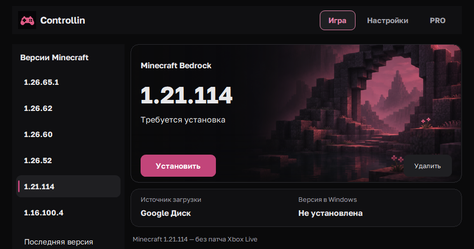

Minecraft Bedrock
Controllin
Клиент для Minecraft Bedrock с управлением меню через геймпад, настройкой чувствительности и мёртвой зоны и оверлеем Gamepad Viewer.
Controllin Launcher устанавливает выбранную версию игры и загружает подходящую сборку клиента.
